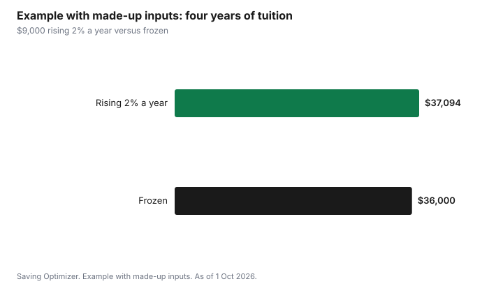

Education · Canada
Ontario Tuition Is Rising Again: The 2% Cap for 2026-27 to 2028-29 and How to Budget
Ontario's public colleges and universities may raise tuition for domestic Ontario students by up to 2% a year for three years, starting in fall 2026, as of 1 October 2026. After that, increases are limited to the lower of 2% or average inflation. This ends a tuition freeze that lasted seven years. Statistics Canada's average tuition for Canadian undergraduates in Ontario is $9,306 in 2026/2027, compared with $8,021 for Canada as a whole. For a family budgeting a four-year degree in Canada, a 2% yearly increase adds roughly $1,000 to $1,100 over the degree on a $9,000 starting tuition, before ancillary fees, which are set separately.
Key takeaways
- Ontario tuition for domestic in-province students at public colleges and universities can rise up to 2% a year for 2026-27, 2027-28 and 2028-29.
- After that, increases are limited to the lower of 2% or the three-year average inflation rate.
- The province estimated the average added cost at $0.47 a day for university students and $0.18 a day for college students.
- Ancillary and compulsory fees, such as student union, health plan and transit pass fees, are separate from tuition.
- Statistics Canada average tuition, Canadian undergraduates in Ontario: $9,306 in 2026/2027 (preliminary).
- Example with made-up inputs: $9,000 tuition rising 2% a year costs $37,094 over four years, $1,094 more than if it stayed frozen.
What Ontario announced
On 12 February 2026, Ontario announced a $6.4 billion funding package for colleges and universities over four years. With it, the government lifted the tuition freeze that had been in place since 2019-20 and allowed publicly assisted institutions to raise domestic tuition by up to 2% a year for three years from the 2026-27 school year. After that, increases are capped at 2% or the average inflation rate, whichever is lower. The same announcement changed OSAP so that no more than 25% of Ontario's portion of aid is a grant; see the OSAP 2026-27 guide.
The government said the increase would add an average of $0.18 a day for college students and $0.47 a day for university students. Over a year, that works out to about $66 for college and $172 for university on average, though individual programs vary.
Who and what the cap covers
| Item | Covered by the 2% cap? | Notes |
|---|---|---|
| Tuition for domestic Ontario students at public colleges and universities | Yes | Up to 2% a year for 2026-27 to 2028-29 |
| Tuition for domestic students from other provinces | Separate limit | Institution documents show a higher limit for out-of-province domestic students |
| International student tuition | No | Set by institutions |
| Ancillary and compulsory fees | No | Set by institutions under separate rules; often voted by students or approved by boards |
| Private career colleges | No | Not publicly assisted institutions |
Statistics Canada notes that some programs can be exempt from provincial tuition policies, so a specific program's increase can differ from the general limit. The only reliable number for your program is the institution's published fee schedule for that year.
What students pay on average
| Group | 2025/2026 | 2026/2027 |
|---|---|---|
| Canadian undergraduate, Ontario | $8,986 | $9,306 |
| Canadian undergraduate, Canada | $7,772 | $8,021 |
| Canadian graduate, Ontario | $9,699 | $10,048 |
| International undergraduate, Ontario | $48,572 | $50,088 |
These are averages weighted by enrolment across programs. Engineering, business, computer science and professional programs usually cost more than arts and science. The average for Ontario includes out-of-province Canadian students, so it can rise by more than 2% even when in-province tuition rises by no more than 2%.
Ancillary fees: the other part of the bill
A student's fee statement has more than tuition. Compulsory ancillary fees can include student association fees, health and dental plans, athletics and recreation, transit passes, and technology or co-op fees. Some health and dental plans let students opt out if they already have coverage, which can save money each year; check the opt-out deadline, usually early in the fall term. Other fees are mandatory. Institutions set ancillary fees under their own rules, and increases are reported separately from tuition.
- Look for opt-out fees, such as a health plan you already have through a parent's plan.
- Check whether a transit pass is compulsory and whether it replaces a pass you would buy anyway.
- Co-op fees are often charged in specific terms; add them to the budget for those terms.
- Residence and meal plans are separate and usually rise each year as well.
Example with made-up inputs: four years of tuition
These numbers are an example with made-up inputs. They are not a published tuition. A student starts a four-year program with tuition of $9,000 in 2026-27, and the school raises tuition by the full 2% each year. For simplicity, the example also applies 2% in the fourth year, though the rule after 2028-29 is the lower of 2% or inflation.
| Year | Rising 2% a year | Frozen |
|---|---|---|
| Year 1 (2026-27) | $9,000.00 | $9,000 |
| Year 2 (2027-28) | $9,180.00 | $9,000 |
| Year 3 (2028-29) | $9,363.60 | $9,000 |
| Year 4 (2029-30) | $9,550.87 | $9,000 |
| Total | $37,094.47 | $36,000 |
Over the degree, the increases add about $1,094. That is less than one month's rent in many university towns, but it comes at the same time as larger loans under OSAP's new mix, so it is worth putting in the plan.

How to budget four years of tuition
- Start with your program's published fees for 2026-27, not a provincial average.
- Assume up to 2% a year more for the next two years, and plan for 2% after that unless inflation is lower.
- Add compulsory ancillary fees as their own line, and assume they rise too.
- Add residence or rent, food, books, transit and a phone plan; see the first-year budget.
- Match each year's costs with RESP withdrawals, savings, work income, scholarships and student aid.
- Revisit the plan each spring, when institutions publish the next year's fees.
| Year | Tuition | Ancillary fees | Residence or rent | Total |
|---|---|---|---|---|
| Year 1 | ||||
| Year 2 | ||||
| Year 3 | ||||
| Year 4 | ||||
| Total |
Where to find your program's fees
Each college and university publishes tuition and ancillary fee schedules, usually on its student accounts or registrar's website, broken down by program and year of study. Fees for the next year are usually approved in the spring. If you are comparing schools, compare the same program, the same year of study and the same student status, and include ancillary fees.
Tax credits for tuition
Eligible tuition and some ancillary fees qualify for the federal tuition tax credit, shown on the T2202 slip from the school. Students with little income can carry the credit forward or transfer up to $5,000 of the current year's amount to a parent, grandparent or spouse. Ontario eliminated its provincial tuition credit in 2017, so the federal credit is the one that applies.
Common mistakes
- Using a provincial average instead of your program's fee schedule.
- Budgeting tuition only and forgetting ancillary fees.
- Missing the health plan opt-out deadline when you already have coverage.
- Assuming tuition will stay flat for four years.
- Not claiming or transferring the tuition tax credit.
Sources
- Government of Ontario, Ontario investing $6.4 billion to support postsecondary sector's long-term success and sustainability (news release, 12 Feb 2026), as of 1 Oct 2026.
- CBC News, Tuition set to rise, OSAP grants lower with new Ontario post-secondary funding changes, 12 Feb 2026; and Students brace for debt, reconsider studies as OSAP cuts take effect, 25 Aug 2026. Up to 2% for three years, then the lower of 2% or inflation; seven-year freeze; $0.18 and $0.47 a day estimates.
- Ontario Tech University, Board of Governors Audit and Finance Committee materials, 19 Feb 2026. Out-of-province domestic and ancillary fee limits at one institution.
- Statistics Canada, Table 37-10-0045-01 Canadian and international tuition fees by level of study (current dollars), released 16 Sep 2026, as of 1 Oct 2026. 2026/2027 preliminary.
- Canada Revenue Agency, Line 32300 Your tuition, education, and textbook amounts, as of 1 Oct 2026. $5,000 transfer limit.
- The $9,000 tuition and the four-year totals in the example table and chart are an example with made-up inputs.
Frequently asked questions
How much is Ontario tuition going up?
Ontario allows publicly assisted colleges and universities to raise tuition for domestic Ontario students by up to 2% a year for three years starting in fall 2026. After that, increases are limited to the lower of 2% or the average inflation rate.
Does the tuition cap include ancillary fees?
No. Ancillary and compulsory fees, such as student association, health plan and transit pass fees, are set separately by institutions. Check your fee statement and any opt-out deadlines.
What is average university tuition in Ontario?
Statistics Canada's preliminary average tuition for Canadian undergraduate students in Ontario is $9,306 for 2026/2027, up from $8,986 in 2025/2026, in current dollars. Programs vary widely, so use your program's fee schedule.
Does the 2% cap apply to international students?
No. Ontario's framework covers domestic tuition at publicly assisted institutions. International tuition is set by institutions, and Statistics Canada's preliminary average for international undergraduates in Ontario is $50,088 for 2026/2027.
How much will a 2% increase cost over a degree?
It depends on the starting tuition. As an example with made-up inputs, $9,000 tuition rising 2% a year costs about $37,094 over four years, around $1,094 more than if it stayed at $9,000.
Researched and drafted with AI assistance and fact-checked against official Canadian sources. How we create content.
Disclosure: Saving Optimizer may earn a commission if a partner link is added later, such as a student bank account offer type. No partnership with the Government of Ontario or any institution is claimed on this page, and no school is ranked. Education only.